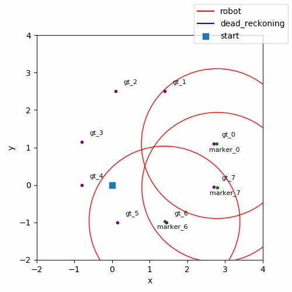
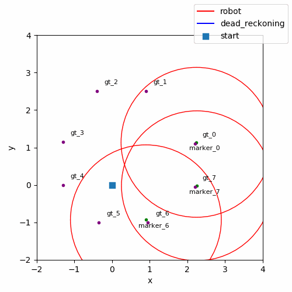

Mbot Mega SLAM
CSE276A Introduction to Robotics @ UCSD.
Previously, I worked on SLAM problem with real-world dataset ( Particle Filter SLAM, Visual Inertial SLAM), but the data are pre-collected and processed (in some sense) for us, I only needed to work on the core algorithms.
In this project, it is required to develop end-to-end pipeline on Mbot Mega, a robot car, with Qualcomm Robotics RB5 Development Kit. The pipeline is developed on ROS, and includes perception, localization, mapping and motion control stacks as follows:
- Perception: Our Mbot Mega uses RGB camera (calibrated with ROS camera calibrator) to detect april tags with off-the-shelf apriltag detection.
- Localization and Mapping: I implemented a Kalman Filter for SLAM backend to keep track/estimate the poses of our robot and apriltags
- Motion control: I adopted PID controller to generate motion commands (given target waypoints) and apply kinematic model (Four Mecanum Wheeled Mobile Robot) to generate twist command for wheel control
The gifs below are the SLAM results, where the green and purple points are estimate landmark and ground truth positions respectively, and the red circles/ellipses are the covariance of their current positions. With octagon route, the robot is able to see the landmark with better viewing angle, thus provides a better estimation; more rounds of driving also yields a better estimation due to more observations. The result can be improved with better motor calibration, non-linear filters (e.g. EKF, UKF) and system/observation noise tuning. Click here for project document!
| Square route | Octagon route |
|---|---|
|  |  |